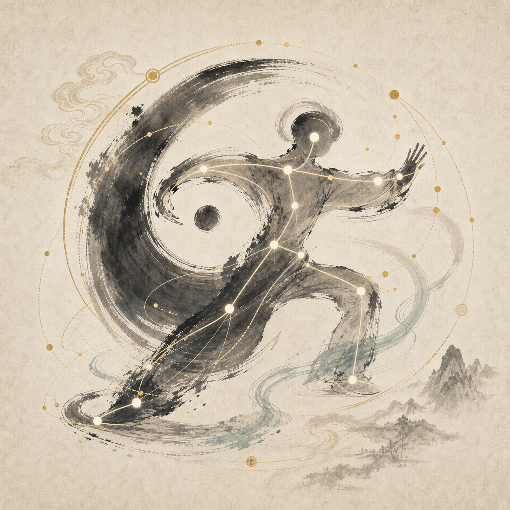
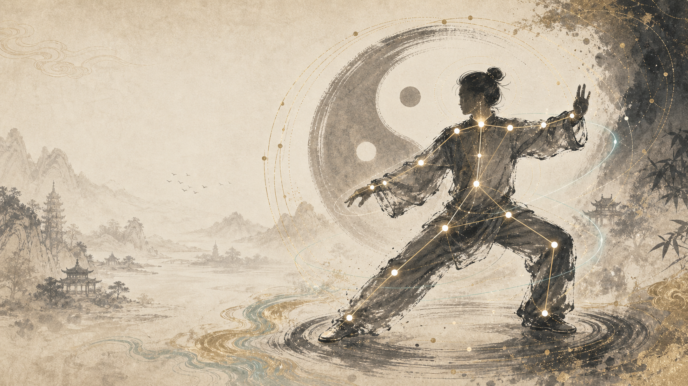
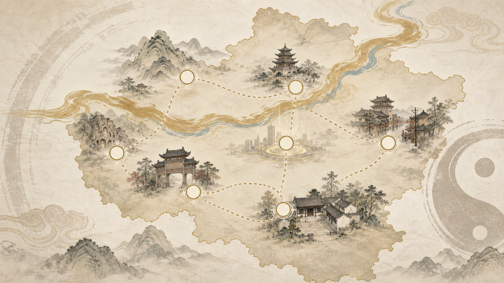

AI 跟练评测
识别身体关键点，对齐标准骨架，给出姿态、重心、节奏和协调性提示。
姿态识别实时评分纠错建议
AI 太极动作识别与纠偏系统
传统太极 × 现代 AI
以人体姿态识别读懂动作，以 AI 教练提示纠偏，让太极练习从看不见的感觉变成可复盘的成长轨迹。

将动作训练、智能反馈、推手交互和文化研学收束为一套可演示、可扩展的平台体验。

识别身体关键点，对齐标准骨架，给出姿态、重心、节奏和协调性提示。
通过来势判断、力点反馈和连击机制训练听劲反应。
把练习视频转成骨架轨迹和训练卡片，用于展示与复盘。

完成训练后解锁陈家沟、少林、河洛文化等节点。
从动作输入到文化解锁，形成完整学习反馈链路。
以下数据用于比赛答辩演示，不代表真实实验结论。
原型演示数据
原型演示数据
原型演示数据
原型演示数据
姿态识别
进入跟练后，对比云手标准骨架，输出评分和纠错建议。
进入全屏训练室，左侧识别练习者动作，右侧同步云手标准骨架和提示。
上传本地练习视频后按同一套评分维度生成报告，适合课后复盘。
云手标准视频已预制关键帧，可继续微调节奏、位置和骨架贴合度。
推手训练
通过来势提示、热区点击、倒计时和连击反馈，练习判断力点、化解部位和重心稳定。
点击“开始对练”进入推手判定。
数字小人
上传练习视频后，以水墨骨架和轨迹线呈现个人动作节奏。
招式课程
中原文化
成长报告
本次训练整体表现较好。云手动作中上肢运行较流畅，但重心左右转换略有不稳。
生成报告后，可让 AI 教练把分项评分转成更像老师讲解的训练建议。